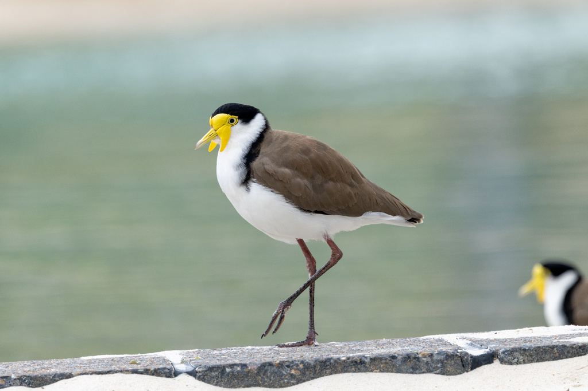
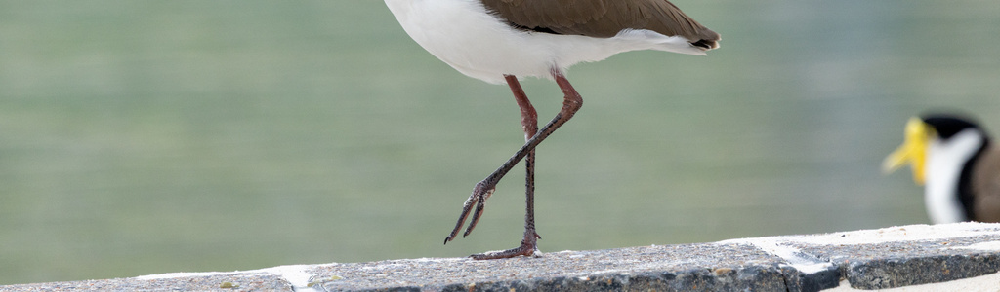

Groundnote · Looking score
Look, then
look again.
A route from the held figure to the yellow at the far edge.


Groundnote · Looking score
A route from the held figure to the yellow at the far edge.

